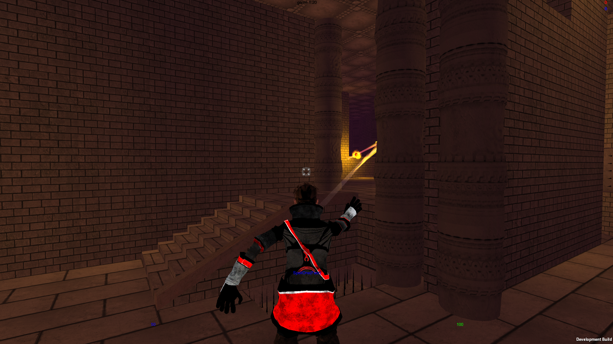

About the Game:
This is a Unity game currently under development (website, blog). Originally started for a university project by a small group, it grew into an idea we all considered great. My role in the project is that of a programmer (all kinds of programming like particles, gameplay, interface, animation), system architect, game designer, part-time modeller and part-time project manager.
The game is a multiplayer, arena-based third person shooter with lots of emphasis on customization. On one hand one can customize their team's colour, the way they look, as well as upload a team banner and on the other hand there is a deep skill customization system that allows the creation and usage of unique spells from scratch.
On these screenshots you can notice the player is curving their fireball around walls. This is another feature, which came naturally from the spell customization system. Since all projectiles' trajectories are determined by 3D nodes in space, it was easy to make these dynamic, so players can curve them in realtime.
You can contact me on angel_lakov@yahoo.com.